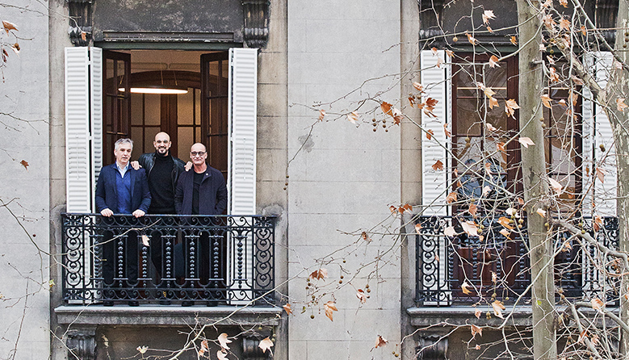

PLAN DIVINO GROUP | Soporte técnico

Actividad: Dedicada a la creación de contenidos artísticos, la gestión integral de espectáculos musicales y el desarrollo de proyectos culturales.
Tareas: Mantenimiento de computadoras, instalación de Windows y realización de backups.
Período: Septiembre de 2025 a Enero de 2026.
Ubicación: Av. Pueyrredón 1080, Cdad. Autónoma de Buenos Aires.
Volver al CV